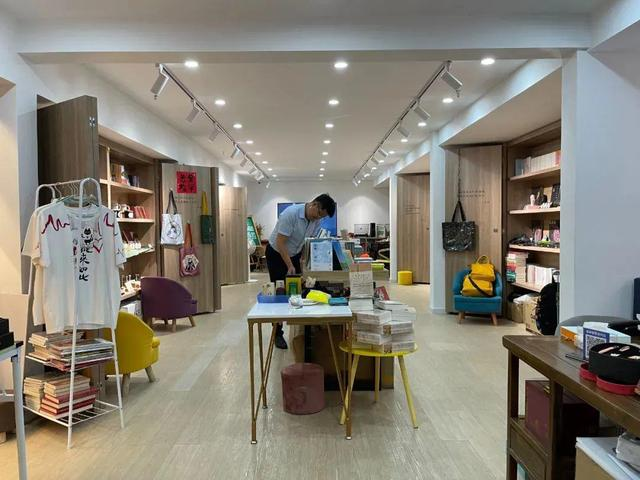

公啡书社
2020年，罗颂的小书店终于落地多伦路，挨着公啡咖啡，得名公啡书社。公啡书社是一家非常有文化格局的书店，店内有许多鲁迅书籍、与多伦路红色文化有关的书籍和文创产品，在这里可以领略到老上海的风情，感受红色文化、海派文化、名人文化的魅力。
营业时间
时间：（暂不确定）
地址交通
地址：上海市虹口区多伦路251号
地铁：8号线虹口足球场站
公交：四川北路山阴路
联系方式
电话：18121434896
历史背景
2020年对于中国的线下书店而言不是好过的一年。从南到北，从烜赫一时著名连锁品牌到随处可见的路边小店，持续的疫情成为压垮很多书店的最后一根稻草。
也是2020年，在入行书店近20年后，土生土长的上海人罗颂做了个很多人看来逆势的决定：在多伦路文化街开一家独立书店。21年1月书店正式开张，依着曾经名震沪上乃至华语文化圈的公啡咖啡馆而立，取名为公啡书社。
经营现状
“多伦路的文化底蕴是我选择将书社开办于此的重要原因。”罗颂表示。
这里曾是鲁迅的“第二客厅”，三十年代时多伦路也承载着众多红色印记和名人故事，是当时上海的“文化重镇”。将公啡书社开办于此，一是希望通过讲述鲁迅故事，传播多伦路的多重文化属性；二是希望打破一部分年轻人对多伦路是“沉重文化区”的刻板印象，以文创产品、青年读者感兴趣的书籍为多伦路带来新活力。
越来越多的人对鲁迅和左翼联盟产生了兴趣。罗颂原以为对这段历史感情兴趣的都是老年人，但今年他办了一场鲁迅展，来了非常多的学生。
通过不断和青年人沟通，罗颂发现大部分来多伦路的游客都不“认识”鲁迅，他们是来这里寻找鲁迅，探讨他到底是个什么样人。中学课本里的《再别康桥》和《你是人间四月天》就似乎把徐志摩和林徽因说的一清二楚，但提起鲁迅，学生们更多觉得他是个大神——神不在人间。

公啡书社为青年人们提供了更全面了解鲁迅的桥梁。这些封存在多伦路居民代代相传的故事里的更丰满的鲁迅从居民处汇聚到公啡书社，罗颂又通过对鲁迅的宣传，让这些有烟火气的段子和故事走出鲁迅研究圈，让更多青年人了解到鲁迅是个很好玩的人，不光是一个“寄意寒星荃不察，我以我血荐轩辕。”的神，也是个会和朋友翻脸，跟邻居互呛的周树人。
趣闻轶事
从去年开始，书社总有一位老人光顾，他穿了一件洗得发白的工装，罗颂妻子甚至觉得有些“破衣烂衫”的感觉。老人一待总是很久，每次走都会提走五六百的书，而公啡书社书籍的均价才四五十。罗颂妻子看他是个退休工人，便邀请他以后来店里看，也省了笔书费。老人是万万不答应的，他有书上做批注的习惯，一定得买回去，他怕把书弄坏。直到有天，老人的女儿帮他来书店提溜书，罗颂夫妇才知道他是华东师范大学的教授，居住在附近，家中藏书已有万册。

公啡书社主理人罗颂说，这里以经营鲁迅先生相关书籍为主，至今已举办了二三十场关于鲁迅的活动和城市行走。让他有些欣喜的是，居民们更愿意把书社当成一个社区会客厅。有一位居民让罗颂印象深刻。这是一位摄影爱好者，拍摄了不少多伦路一带街区的照片。有次，他来到公啡书社，询问主理人，书社里的大屏幕能否播放他的作品。当得到许可后，他带着朋友一起来到书社里，一边播放照片，一边讲述社区的故事。